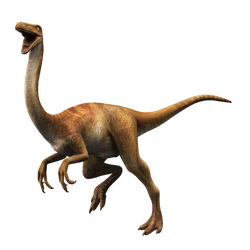

Gallimimus
Período: Cretácico Superior
Altura: 2 m
Lonxitude: 6 m
Dieta: herbívora
Gallimimus foi un dinosauro terópodo rápido que viviu hai aproximadamente 70 millóns de anos. Semellando un avestruz, tiña un corpo esvelto, pescozo longo e patas adaptadas para correr. Medía ata 6 metros de longo e alimentábase de plantas e insectos, destacando pola súa axilidade e velocidade.
